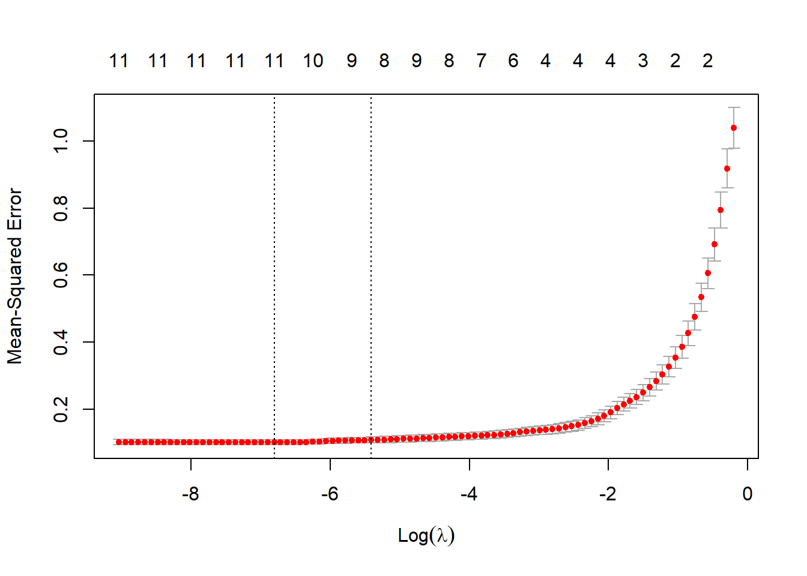
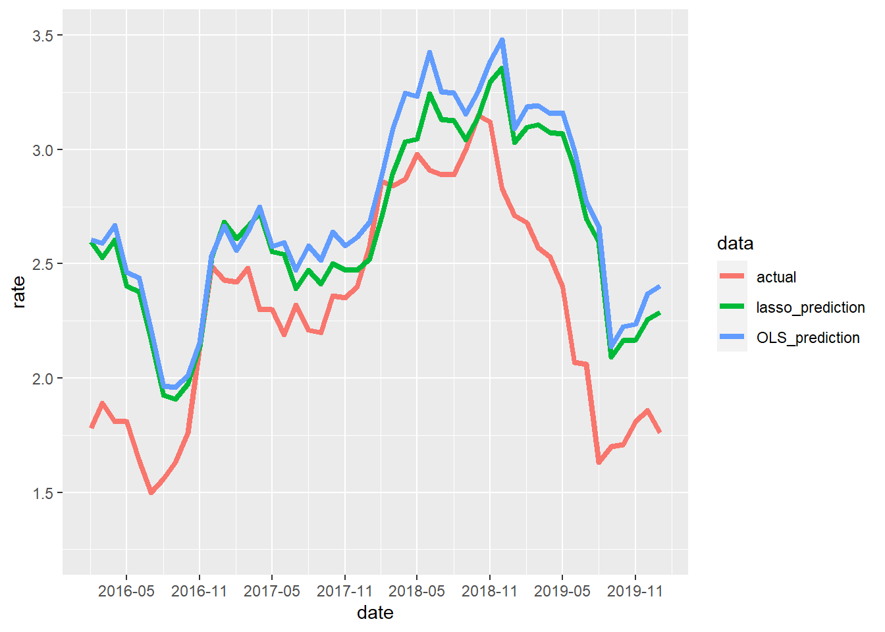
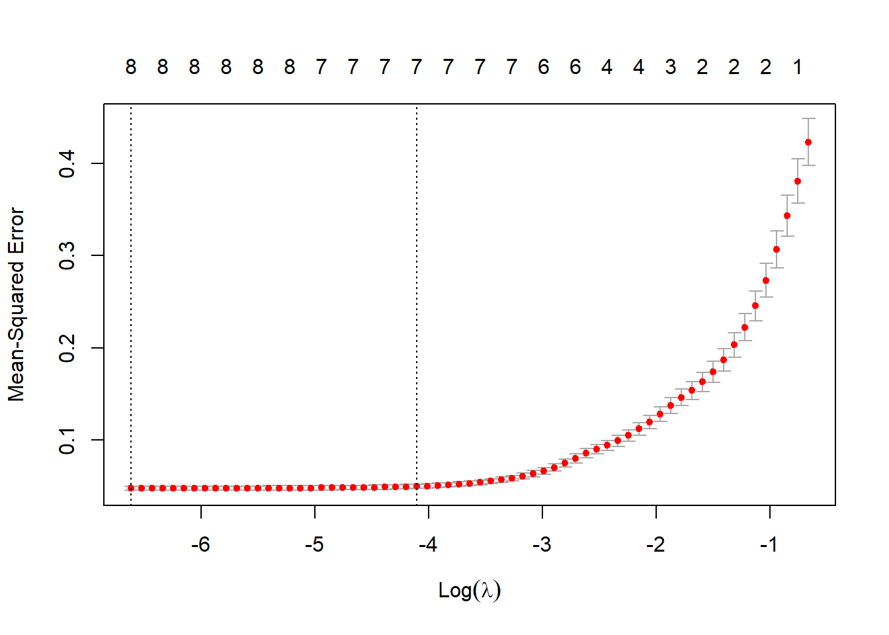
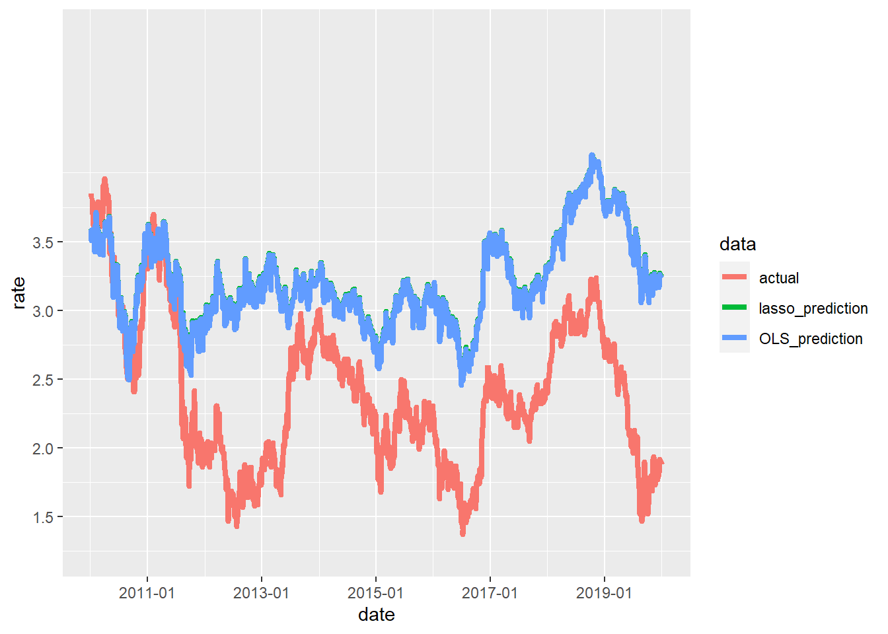

Fitting the 10-year long-term interest rate
Hi. I wanted to do a fitting of the 10 year long term interest rate for a certain reason. So, we will use US data to analyze the results. First, let’s collect the data. We will use the quantmod package to drop the data from FRED. The command getsymbols(key,from=start date,src="FRED", auto.assign=TRUE) is easy to use. You can find the key on the FRED website.
1. Data collection
library(quantmod)
# data name collected
symbols.name <- c("10-Year Treasury Constant Maturity Rate","Effective Federal Funds Rate","
Consumer Price Index for All Urban Consumers: All Items","Civilian Unemployment Rate","3-Month Treasury Bill: Secondary Market Rate","Industrial Production Index","
10-Year Breakeven Inflation Rate","Trade Weighted U.S. Dollar Index: Broad, Goods","
Smoothed U.S. Recession Probabilities","Moody's Seasoned Baa Corporate Bond Yield","5-Year, 5-Year Forward Inflation Expectation Rate","Personal Consumption Expenditures")
# Collect economic data
symbols <- c("GS10","FEDFUNDS","CPIAUCSL","UNRATE","TB3MS","INDPRO","T10YIEM","TWEXBMTH","RECPROUSM156N","BAA","T5YIFRM","PCE")
getSymbols(symbols, from = '1980-01-01', src = "FRED", auto.assign = TRUE)
## [1] "GS10" "FEDFUNDS" "CPIAUCSL" "UNRATE"
## [5] "TB3MS" "INDPRO" "T10YIEM" "TWEXBMTH"
## [9] "RECPROUSM156N" "BAA" "T5YIFRM" "PCE"
macro_indicator <- merge(GS10,FEDFUNDS,CPIAUCSL,UNRATE,TB3MS,INDPRO,T10YIEM,TWEXBMTH,RECPROUSM156N,BAA,T5YIFRM,PCE)
rm(GS10,FEDFUNDS,CPIAUCSL,UNRATE,TB3MS,INDPRO,T10YIEM,TWEXBMTH,RECPROUSM156N,BAA,T5YIFRM,PCE,USEPUINDXD)
2. Monthly Analysis Part
The data are here. We will create a dataset for the estimation. The dependent variable is the 10-Year Treasury Constant Maturity Rate(GS10). The explanatory variables are as follows
| explanatory variable | key | proxy variable |
|---|---|---|
| Federal Funds Rate | FEDFUNDS | Short term rate |
| Consumer Price Index | CPIAUCSL | Price |
| Unemployment Rate | UNRATE | Employment |
| 3-Month Treasury Bill | TB3MS | Short term rate |
| Industrial Production Index | INDPRO | Business conditions |
| Breakeven Inflation Rate | T10YIEM | Price |
| Trade Weighted Dollar Index | TWEXBMTH | Exchange rates |
| Recession Probabilities | RECPROUSM156N | Business condition |
| Moody’s Seasoned Baa Corporate Bond Yield | BAA | Risk premium |
| Inflation Expectation Rate | T5YIFRM | Price |
| Personal Consumption Expenditures | PCE | Business condition |
| Economic Policy Uncertainty Index | USEPUINDXD | Politics |
It’s a pretty appropriate choice of variables, but in many cases, we haven’t done it properly in terms of how to model long-term interest rates from a macro modeling perspective… In DSGE, we formulate the path of short-term interest rates linked to the path of short-term interest rates up to 10 years into the future according to the efficient market hypothesis and long-term interest rates equal to the path of short-term interest rates when I was a graduate student It was modeling (which seems to be done properly in macro finance circles). That’s why I’ve added short-term interest rates as an explanatory variable. And I also added three indicators for prices that would have an impact on the short-term interest rate. In addition, I added data on the economy because it is well known that it is highly correlated with the economy. This is due to the fact that in the first place, it is common in macro models to model short-term interest rates as following the Taylor rule.
$$ r_t = \rho r_{t-1} + \alpha \pi_{t} + \beta y_{t} $$
where \(r_t\) is the policy interest rate (short-term interest rate), \(\pi_t\) is the inflation rate, and \(y_t\) is the output. The $R_rho, \\alpha, and \(y_t\) are called deep parameters, which represent inertia, the sensitivity of the interest rate to inflation, and the sensitivity of the interest rate to output, respectively. It is well known as the “Taylor’s Principle” that when $\rho=0, \(\beta=0\), a reasonably expected equilibrium solution can only be obtained when \(\alpha>=1\). Other explanatory variables include Moody's Seasoned Baa Corporate Bond Yield, which may also have an arbitrage relationship with corporate bonds. Also, we would like to add the VIX index and an index related to finances if we wanted to. The fiscal index is either Quatery or Annualy and cannot be used for monthly estimation. This is the most difficult part. I will re-estimate if I come up with something.
Now, let’s get into the estimation. Since there are many explanatory variables in this case, we want to do a lasso regression to narrow down the valid variables. We will also do an OLS for comparison. The explanatory variables will be the values of the dependent variable one period ago. Probably, even one period ago, depending on when the data are published, it may not be in time for the next month’s estimates, but I’ll do this anyway.
# make dataset
traindata <- na.omit(merge(macro_indicator["2003-01-01::2015-12-31"][,1],stats::lag(macro_indicator["2003-01-01::2015-12-31"][,-1],1)))
testdata <- na.omit(merge(macro_indicator["2016-01-01::"][,1],stats::lag(macro_indicator["2016-01-01::"][,-1],1)))
# fitting OLS
trial1 <- lm(GS10~.,data = traindata)
summary(trial1)
##
## Call:
## lm(formula = GS10 ~ ., data = traindata)
##
## Residuals:
## Min 1Q Median 3Q Max
## -0.7593 -0.2182 0.0041 0.2143 0.7051
##
## Coefficients:
## Estimate Std. Error t value Pr(>|t|)
## (Intercept) 15.0576773 4.3419245 3.468 0.000693 ***
## FEDFUNDS -0.2075752 0.1413832 -1.468 0.144253
## CPIAUCSL -0.0750111 0.0204871 -3.661 0.000352 ***
## UNRATE -0.2183796 0.0784608 -2.783 0.006109 **
## TB3MS 0.3031085 0.1393904 2.175 0.031310 *
## INDPRO -0.0705997 0.0263855 -2.676 0.008328 **
## T10YIEM 1.1476564 0.1758964 6.525 1.10e-09 ***
## TWEXBMTH -0.0313911 0.0117338 -2.675 0.008338 **
## RECPROUSM156N -0.0103854 0.0021233 -4.891 2.66e-06 ***
## BAA 0.7802368 0.0858538 9.088 7.60e-16 ***
## T5YIFRM -0.4529529 0.1881510 -2.407 0.017342 *
## PCE 0.0009815 0.0002477 3.963 0.000116 ***
## ---
## Signif. codes: 0 '***' 0.001 '**' 0.01 '*' 0.05 '.' 0.1 ' ' 1
##
## Residual standard error: 0.2953 on 143 degrees of freedom
## Multiple R-squared: 0.9218, Adjusted R-squared: 0.9158
## F-statistic: 153.2 on 11 and 143 DF, p-value: < 2.2e-16
It’s a higher degree of freedom-adjusted coefficient of determination; we use the model through 12/31/2015 to predict the out-sample data (01/01/2016~) and calculate the mean squared error.
est.OLS.Y <- predict(trial1,testdata[,-1])
Y <- as.matrix(testdata[,1])
mse.OLS <- sum((Y - est.OLS.Y)^2) / length(Y)
mse.OLS
## [1] 0.2422673
The next step is the lasso regression, using the cv.glmnet function of the glmnet package to perform Cross Validation and determine \(\lambda\).
# fitting lasso regression
library(glmnet)
trial2 <- cv.glmnet(as.matrix(traindata[,-1]),as.matrix(traindata[,1]),family="gaussian",alpha=1)
plot(trial2)

trial2$lambda.min
## [1] 0.001106745
coef(trial2,s=trial2$lambda.min)
## 12 x 1 sparse Matrix of class "dgCMatrix"
## s1
## (Intercept) 9.560938684
## FEDFUNDS -0.007306457
## CPIAUCSL -0.045386980
## UNRATE -0.174775320
## TB3MS 0.126669996
## INDPRO -0.059539752
## T10YIEM 1.188103243
## TWEXBMTH -0.015425929
## RECPROUSM156N -0.009488571
## BAA 0.743677181
## T5YIFRM -0.459542956
## PCE 0.000602374
Unemployment Rate, 3-Month Treasury Bill, Breakeven Inflation Rate, Moody's Seasoned Baa Corporate Bond Yield and Inflation Expectation Rate. That’s the result of a larger regression coefficient. Other than the unemployment rate, the results are within expectations. However, the correlation with the economy seems to be low as far as this result is concerned (does it only work in the opposite direction?). Calculate the MSE.
est.lasso.Y <- predict(trial2, newx = as.matrix(testdata[,-1]), s = trial2$lambda.min, type = 'response')
mse.lasso <- sum((Y - est.lasso.Y)^2) / length(Y)
mse.lasso
## [1] 0.1842137
The lasso regression gives better results. Let’s plot the predicted and actual values from the lasso regression as a time series.
library(tidyverse)
ggplot(gather(data.frame(actual=Y[,1],lasso_prediction=est.lasso.Y[,1],OLS_prediction=est.OLS.Y,date=as.POSIXct(rownames(Y))),key=data,value=rate,-date),aes(x=date,y=rate, colour=data)) +
geom_line(size=1.5) +
scale_x_datetime(breaks = "6 month",date_labels = "%Y-%m") +
scale_y_continuous(breaks=c(1,1.5,2,2.5,3,3.5),limits = c(1.25,3.5))

The sense of direction is good. On the other hand, I am not predicting a sharp decline in interest rates from January 2016 or after December 2018. It looks like we’ll have to try to do one of the following to improve the accuracy of this part of the projections: consider some variables OR run a rolling estimate.
3. Daily Analysis Part
In addition to monthly analysis, I would like to do daily analysis. In the case of daily data, the jagged edge problem is unlikely to occur because the data is often released after the market closes. We will start by collecting daily data.
# data name collected
symbols.name <- c("10-Year Treasury Constant Maturity Rate","Effective Federal Funds Rate", "based on U.S. Dollar","NASDAQ Composite Index","3-Month Treasury Bill: Secondary Market Rate","Economic Policy Uncertainty Index for United States","
10-Year Breakeven Inflation Rate","Trade Weighted U.S. Dollar Index: Broad, Goods","Moody's Seasoned Baa Corporate Bond Yield","5-Year, 5-Year Forward Inflation Expectation Rate")
# Collect economic data
symbols <- c("DGS10","DFF","NASDAQCOM","DTB3","USEPUINDXD","T10YIE","DTWEXB","DBAA","T5YIFR")
getSymbols(symbols, from = '1980-01-01', src = "FRED", auto.assign = TRUE)
## [1] "DGS10" "DFF" "NASDAQCOM" "DTB3" "USEPUINDXD"
## [6] "T10YIE" "DTWEXB" "DBAA" "T5YIFR"
NASDAQCOM.r <- ROC(na.omit(NASDAQCOM))
macro_indicator.d <- merge(DGS10,DFF,NASDAQCOM.r,DTB3,USEPUINDXD,T10YIE,DTWEXB,DBAA,T5YIFR)
rm(DGS10,DFF,NASDAQCOM,NASDAQCOM.r,DTB3,USEPUINDXD,T10YIE,DTWEXB,DBAA,T5YIFR)
The next step is to build the data set. We separate the data for training and for training. Considering the actual prediction process, we use data from two business days ago as the explanatory variables.
# make dataset
traindata.d <- na.omit(merge(macro_indicator.d["1980-01-01::2010-12-31"][,1],stats::lag(macro_indicator.d["1980-01-01::2010-12-31"][,-1],2)))
testdata.d <- na.omit(merge(macro_indicator.d["2010-01-01::"][,1],stats::lag(macro_indicator.d["2010-01-01::"][,-1],2)))
# fitting OLS
trial1.d <- lm(DGS10~.,data = traindata.d)
summary(trial1.d)
##
## Call:
## lm(formula = DGS10 ~ ., data = traindata.d)
##
## Residuals:
## Min 1Q Median 3Q Max
## -0.81961 -0.12380 0.00509 0.14514 0.72712
##
## Coefficients:
## Estimate Std. Error t value Pr(>|t|)
## (Intercept) -3.5168438 0.1664198 -21.132 < 2e-16 ***
## DFF 0.0770736 0.0217208 3.548 0.000403 ***
## NASDAQCOM -0.4301865 0.4280568 -1.005 0.315121
## DTB3 0.1137128 0.0238678 4.764 2.14e-06 ***
## USEPUINDXD -0.0006591 0.0001073 -6.144 1.11e-09 ***
## T10YIE 0.6957403 0.0351666 19.784 < 2e-16 ***
## DTWEXB 0.0276208 0.0010896 25.350 < 2e-16 ***
## DBAA 0.2879946 0.0131335 21.928 < 2e-16 ***
## T5YIFR 0.3433321 0.0376058 9.130 < 2e-16 ***
## ---
## Signif. codes: 0 '***' 0.001 '**' 0.01 '*' 0.05 '.' 0.1 ' ' 1
##
## Residual standard error: 0.2167 on 1148 degrees of freedom
## Multiple R-squared: 0.8902, Adjusted R-squared: 0.8894
## F-statistic: 1163 on 8 and 1148 DF, p-value: < 2.2e-16
The coefficient of determination remains high.
est.OLS.Y.d <- predict(trial1.d,testdata.d[,-1])
Y.d <- as.matrix(testdata.d[,1])
mse.OLS.d <- sum((Y.d - est.OLS.Y.d)^2) / length(Y.d)
mse.OLS.d
## [1] 0.8350614
Next is the lasso regression. Determine \(lambda\) in CV.
# fitting lasso regression
trial2.d <- cv.glmnet(as.matrix(traindata.d[,-1]),as.matrix(traindata.d[,1]),family="gaussian",alpha=1)
plot(trial2.d)

trial2.d$lambda.min
## [1] 0.001339007
coef(trial2.d,s=trial2.d$lambda.min)
## 9 x 1 sparse Matrix of class "dgCMatrix"
## s1
## (Intercept) -3.4297225594
## DFF 0.0707532975
## NASDAQCOM -0.3512778327
## DTB3 0.1204390843
## USEPUINDXD -0.0006453775
## T10YIE 0.6894098221
## DTWEXB 0.0272773903
## DBAA 0.2831306290
## T5YIFR 0.3411269206
The coefficient of libor became zero, and the MSE of OLS was higher than that of libor.
est.lasso.Y.d <- predict(trial2.d, newx = as.matrix(testdata.d[,-1]), s = trial2.d$lambda.min, type = 'response')
mse.lasso.d <- sum((Y.d - est.lasso.Y.d)^2) / length(Y.d)
mse.lasso.d
## [1] 0.8492769
Plot the predictions.
ggplot(gather(data.frame(actual=Y.d[,1],lasso_prediction=est.lasso.Y.d[,1],OLS_prediction=est.OLS.Y.d,date=as.POSIXct(rownames(Y.d))),key=data,value=rate,-date),aes(x=date,y=rate, colour=data)) +
geom_line(size=1.5) +
scale_x_datetime(breaks = "2 year",date_labels = "%Y-%m") +
scale_y_continuous(breaks=c(1,1.5,2,2.5,3,3.5),limits = c(1.25,5))

As with the monthly, there is very little difference between the predicted values for OLS and lasso. We have been able to capture the fluctuations quite nicely, but we have not been able to capture the interest rate decline caused by the United States federal government credit-rating downgrades in 2011 or the interest rate increase associated with the economic recovery in 2013. The only daily economic indicator I have is POS data, but I might be able to use the recently used nightlight satellite imagery data, if I had to say so. I’ll try it if I have time. For now, I’d like to end this article for now. Thank you for reading this article.